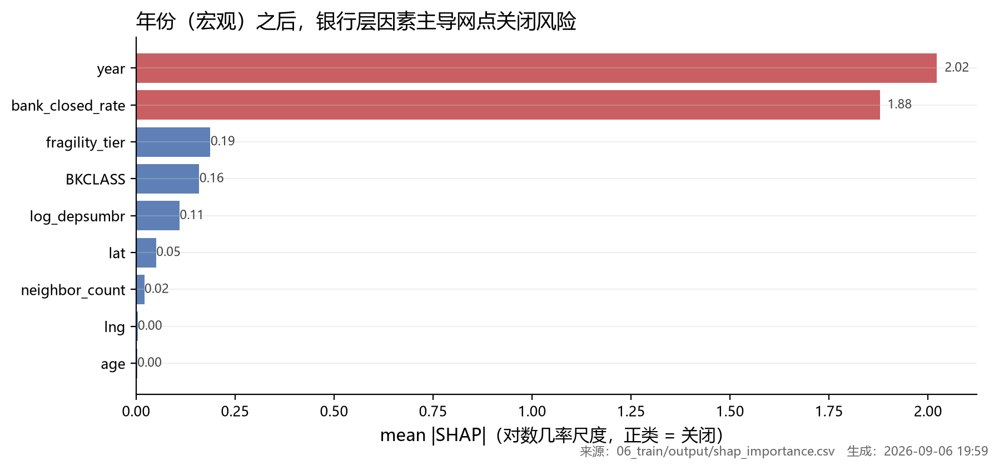

可解释性 · 模型凭什么说它风险高
全局 SHAP 重要性（对数轴）+ 三个真实网点的逐特征分解。
模型说一个网点风险高，凭什么？这一页把它拆开：全局看哪些特征在驱动，
局部看单个网点被谁推向关闭。
线性模型的 SHAP（精确值，非近似）数值特征：SHAP = coef × (x − mean) / std
类别特征：SHAP = 该档位的 one-hot 系数（参照档 = 0）
Σ SHAP + 截距 = logit ⇒ 各项之和恰好等于模型输出
三个真实网点：谁把它推向关闭
上游静态产物（同一口径）

上游 ⑦ 阶段产出的静态 SHAP 重要性图（同一口径）
怎么读这两张图- year 排第一：危机后整合窗口把风险整体抬高 —— 这是「什么时候比多老更重要」的量化版本。
- bank_closed_rate 排第二：银行自身的历史裁撤倾向，是最强的单点因子（量级与 year 相当）。
- age（网点年龄）排在最后（mean|SHAP| 0.003）—— 「老网点更容易死」在本模型里几乎不成立；年龄效应还被左截断污染。